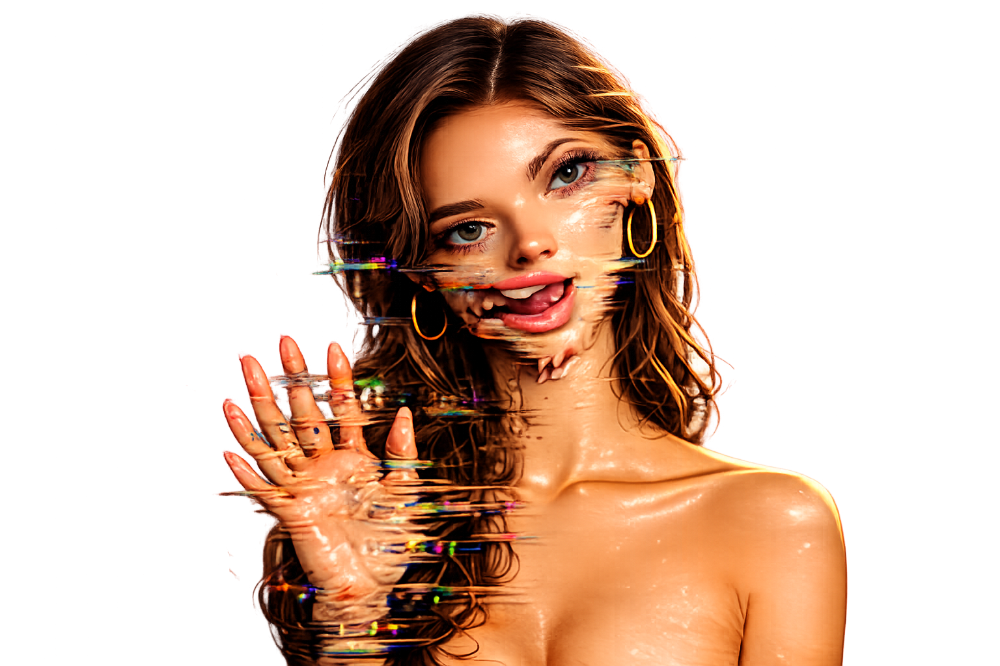
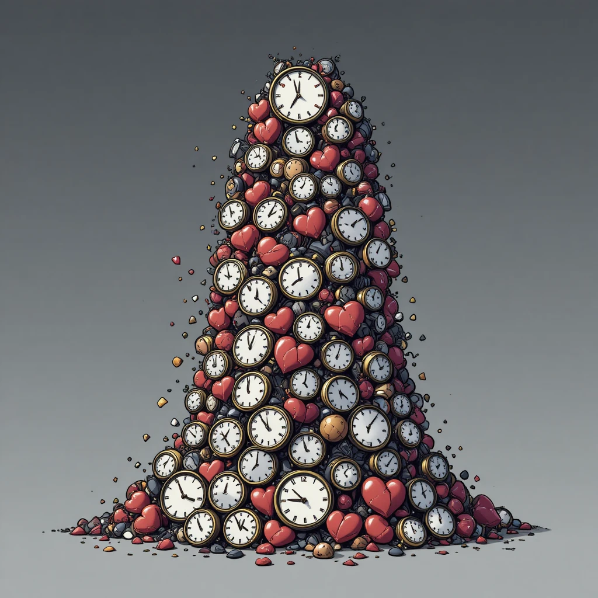
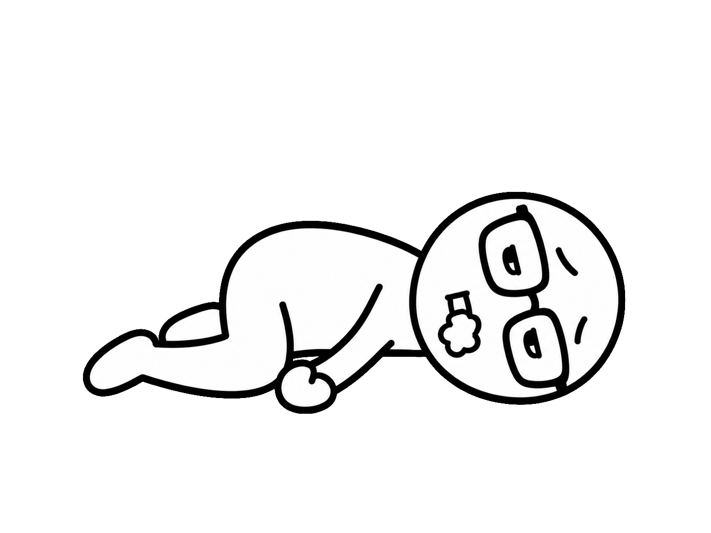
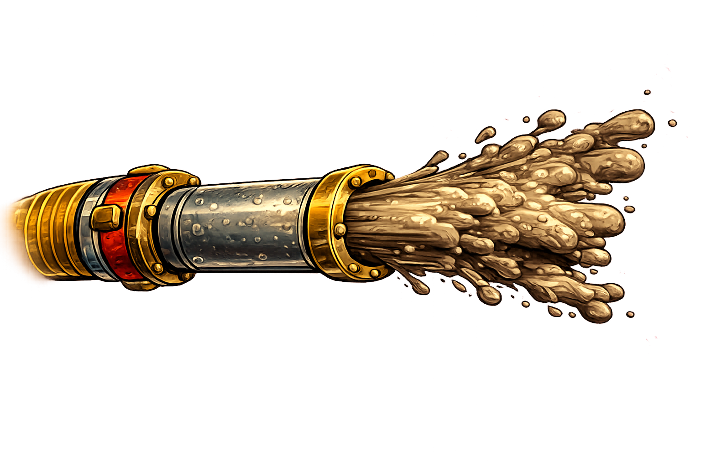
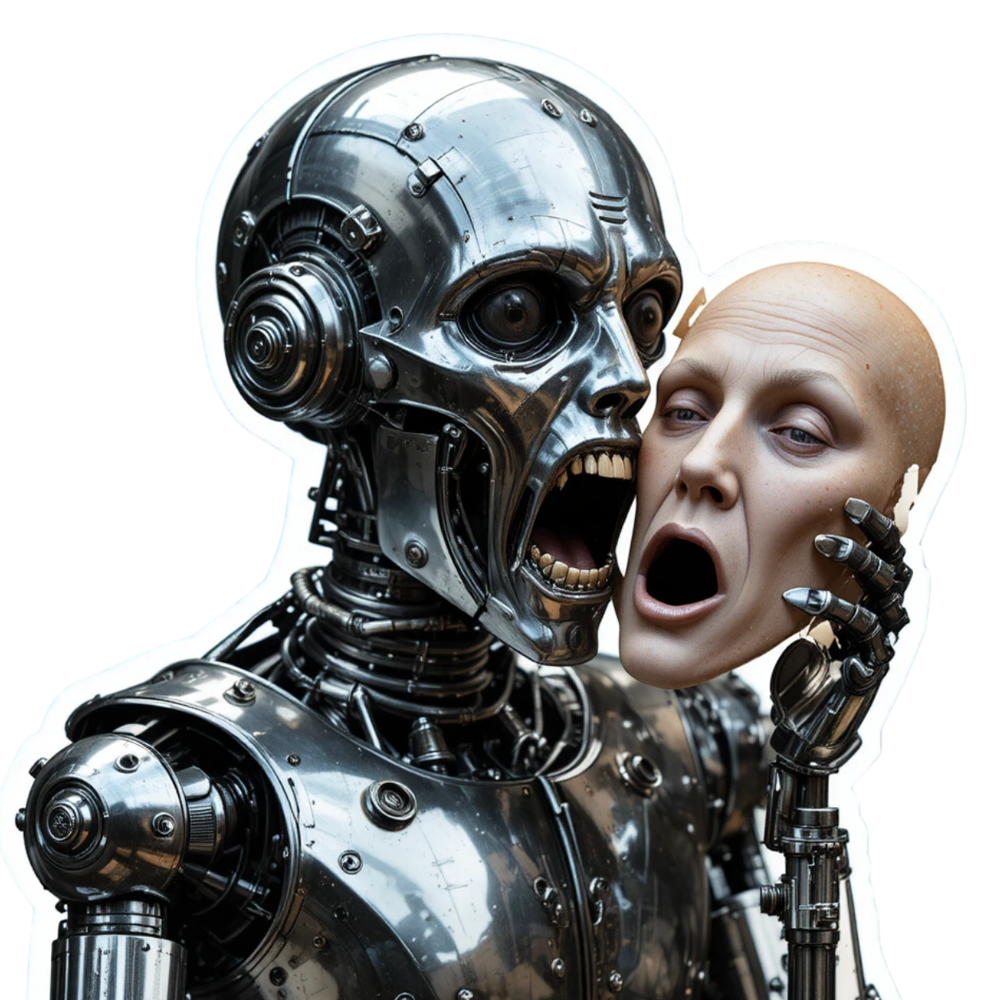

what counts
as slop?
as slop?
3 THINGS TO SPOT


1. LOOKS FINE
...for half a second


look closer...
6 fingers?!
gibberish.


"Coca-Coola"?!
(that really happened.)
the maker: a few seconds + 1 coin
2. COSTS THEM NOTHING

COSTS YOU
EVERYTHING
EVERYTHING
time
attention
trust

3. MADE BY THE THOUSAND


10,000+
like a fire hose.

✓looks fine
✓costs them nothing
✓made by the thousand

a machine pretending
to be a person
to be a person
MAX
AT FULL VOLUME